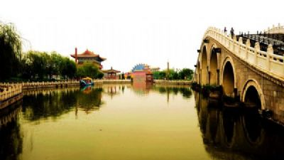
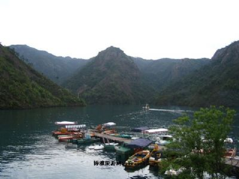

景点
龙门石窟| 龙门石窟位于洛阳市区南12公里处，是与大同云岗石窟、敦煌千佛洞石窟齐名的我国三大石窟之一，国家5A景区。 龙门是一个风景秀丽的地方，这里有东、西两座青山对峙，伊水缓缓北流。远远望去，犹如一座天然门阙，所以古称“伊阙”。“伊阙”，自古以来，已成为游龙门的第一景观。唐诗人白居易曾说过：“洛阳四郊山水之胜，龙门首焉”。 龙门石窟始凿于北魏孝文帝迁都洛阳（公元494年）前后，后来，历经东魏、北齐、北周，到隋唐至宋等朝代又连续大规模营造达400余年之久。密布于伊水东西两山的峭壁上，南北长达1公里，共有97000余尊佛像，1300多个石窟。现存窟龛2345个，题记和碑刻3600余品，佛塔50余座，造像10万余尊。其中最大的佛像高达17.14米，最小的仅有2厘米。这些都体现出了我国古代劳动人民很高的艺术造诣。 |
| 云台山位于河南省焦作市修武县境内，拥有十一大景点，2004年2月13日，被联合国教科文组织评选为全球首批世界地质公园。同时，还是国家级风景名胜区、全国文明风景旅游区、首批国家AAAA-旅游景区、国家自然遗产、国家森林公园、国家级猕猴自然保护区、国家水利风景区、国家文化产业示范基地，荣获了世界杰出旅游服务品牌等多项荣誉。2010年3月，“云台山”被国家工商总局认定为中国驰名商标。2010年7月，被河南省人民政府授予2010年度（首届）河南省省长质量奖。2011年9月，被国家质量监督检验检疫管理总局评为全国质量工作先进单位。 |
| 少林寺，位于登封县城西北13公里少室山北麓五乳峰下。若从郑州、开封、洛阳乘汽车，可直达寺院门前。少林寺创建于北魏太和二十年（496年），因此寺建于少室山麓的丛林茂密之处，故名“少林”。正如《说嵩》中所说：“少林者，少室之林”。少林寺是我国佛教禅宗的发样地，所以又称《少林禅寺》和《大少林》．据文献记载，北魏太和十九年（495年）印度高僧跋陀自西域跋涉来洛阳，他0幽栖，常到嵩山，又受孝文帝尊崇，“诏于少室山阴，筑少林寺而居之”。北魏正光至孝昌年间，另一印度僧人达摩来中国，修禅于嵩山少林寺。他广集弟子，传授禅宗，使少林寺的影响日益扩大，传说达摩曾在山中面壁九年，因此留影于石。 |
| 1992年，开封市为再现北宋东京的风情，择取《清明上河图》中的精髓，于城内西北隅创立清明上河园，占地33公顷，营建房屋400余间，整个建筑，悉依宋代《营造法式》，是开封继宋都御街后又一个仿宋建筑群。又因水面辽阔，运用造园手法，将水面析为港汊交错的河网，河港内有大小船舶50多艘，均按宋代"汴河船"的形制而特制，悠游水中，动静结合，更添流光曳彩的宋韵。从而再现《清明上河图》所展示的宋都东京的繁荣景象，荟萃流传至今的宋代民间艺术、民俗风情等历史文化于世人面前。 |  |
| 洛阳白云山位于河南省洛阳市嵩县南部伏牛山腹地，是国家级森林公园、国家级自然保护区、国家AAAA-旅游景区、中国十佳休闲胜地。景区总面积168平方公路，现已开发白云峰、玉皇顶、鸡角曼（小黄山）、九龙瀑布、原始森林五大观光区和白云湖、高山森林氧吧、高山牡丹园、留侯祠、芦花谷无大休闲区。 白云山景区地跨长江、黄河、淮河三大流域之水于一峰，集三河之灵于一山，为中原独有，堪称“中原山水大观”之绝品。 白云山地处暖温带与北亚热带过渡地带，平均海拔1800米，夏季最高气温不超过26℃，动植物资源十分丰富。据调查，有动物204种，植物1991种，森林覆盖率达95%以上，被专家学者誉为“自然博物馆”。境内海拔1500米以上的山峰37座，其中玉皇顶海拔2216米，为中原第一峰，是看日出观云海的最佳处。 |  |
| 殷墟博物苑位于安阳市西北郊小屯村，因其坐落在“殷墟宫殿区”而得命名。殷墟博物苑为国家AAAA级景区，中国考古学的诞生地，中国最早的文字---甲骨文发祥地，是中宣部公布的全国百个爱国主义教育示范基地之一和首批全国旅游景区国家级青年文明号，属于历史遗址类型的全国重点文物保护单位。2006年7月13日，联合国教科文组织第30届世界文化遗产委员会通过列入《世界遗产名录》。 殷墟博物苑“茅茨土阶”，“四阿重屋”式的殿宇高耸，朱墨雕彩；青铜礼器，古色古香；仿殷石雕，徐徐如生；花木扶疏，芳草萋萋。院内景色与苑东北的洹水河相映成趣，具有古代帝王宫殿的人文景观特征。 殷墟博物院犹如一座展示华夏历史瑰宝的艺术殿堂，给人以古代文明的陶冶和启迪。游览殷墟博物苑，您可以领略博大精深的殷商文化，探寻中华民族文明史的渊源。 |  |
| 嵖岈山风景区位于河南省遂平县境内，景区面积148平方公里，可游面积52平方公里，海拔786米，是国家级地质公园、国“AAAA”级旅游区、河南省十大热点景区和18个重点风景区之一。嵖岈山区位优越，交通便利，气候宜人，资源丰富，历史悠久，人文璀璨，素有“中原盆景”、“华夏图腾林”、“地质公园”、“西游记全书”和“东方第一社”之美誉。 嵖岈山区位优越、交通便利，南临驻马店市，距武汉300公里，北靠漯河市，距郑州180公里。107国道、京广铁路、京珠高速纵贯遂平县境，距景区25公里。纵横交错、四通八达的交通网络和现代化的交通条件，缩短了景区与大都市之间的距离，交通方便快捷。 |
| 西峡恐龙遗迹园位于河南省西峡县丹水镇的中国西峡恐龙遗迹园，以西峡恐龙蛋化石为主要展出特色。这里有全国唯一一个以恐龙蛋化石为主要展品的西峡恐龙蛋化石博物馆，有世界唯一一座以恐龙蛋化石原始埋藏状态为特色的恐龙蛋遗址展馆，这里有中原首座动感4D影院，这里有以展示地球沧海桑田变化和生物复杂演化主题的时空隧道。 中国西峡恐龙遗迹园是一大型恐龙主题公园，位于秦岭山脉东段、伏牛山南麓的河南省西峡县丹水镇三里庙村。西峡恐龙遗迹园主要由地质科普广场、恐龙蛋化石博物馆、恐龙蛋遗址和仿真恐龙园四部分组成。西峡恐龙遗址，属于白垩纪断陷盆地沉积。恐龙蛋遗址的蛋化石层是西坪――丹水盆地的最高层位，已暴露的蛋化石达1000多枚。在它的下部地层至少还有16个产蛋层，现已确定蛋化石分别归于6科9属13种。特别是西峡巨型长形蛋和戈壁棱柱形蛋，世界稀有罕见，是西峡蛋化石的标志。西峡出土的恐龙蛋化石数量之大、种类之多、分布之广、保存之好堪称“世界之最”。最近大量的鸭嘴龙、禽龙、原角龙、肉食龙等恐龙骨骼的发现，又为西峡蛋化石增加新的内容，被誉为继“秦始皇陵兵马俑”之后的世界第九大奇迹。恐龙遗迹承载着远古时代生命科学的重要信息，期待着人类去破解恐龙灭亡之谜。沧海桑田，乾坤挪移，六千多万年过去了。中国西峡恐龙遗迹园，为研究地球演化、天体演变、灾变事件和恐龙的生活习性、生态环境与物种灭绝等提供了理想的科学研究基地，为科普和旅游开辟了一处崭新的园区。 |